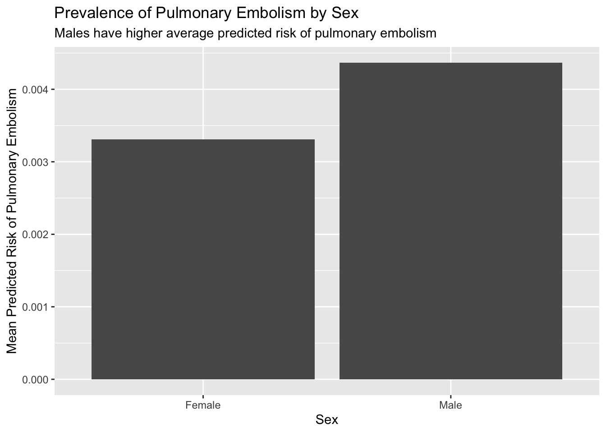

Show the code
library(dplyr)
library(tidyr)
library(stringr)
library(here)
library(ggplot2)
library(forcats)The data is obtained from the Patient Risk Profiles dataset in TidyTuesday package. It specifically examines patient risk on 14 outcomes based on medical history features. The data dictionary can be found here.
What is the prevalence and distribution of pulmonary embolism stratified by sex and smoking status?
How does the risk of developing pulmonary embolism correlate with the risk of developing 13 other health outcomes?
The intended audience for this dataset is healthcare professionals, researchers, or organizations involved in the healthcare industry. This type of dataset could be used to analyze and assess the risk factors associated with patients’ health conditions. Healthcare providers, insurers, researchers, and policymakers may be interested in such data to understand patterns, make informed decisions, and improve patient outcomes.
My data was obtained from the Patient Risk Profiles dataset on TidyTuesday. Two options exist to load the dataset, the first one is through using the TidyTuesday R package and the second one is through accessing the .csv file on github
# if(!file.exists(here("data","tuesdata_rainfall.RDS"))){
# tuesdata <- tidytuesdayR::tt_load('2020-01-07')
# rainfall <- tuesdata$rainfall
# temperature <- tuesdata$temperature
#
# # save the files to RDS objects
# saveRDS(tuesdata$rainfall, file = here("data","tuesdata_rainfall.RDS"))
# saveRDS(tuesdata$temperature, file = here("data","tuesdata_temperature.RDS"))
# }
#
# # Option 1: tidytuesdayR package
# ## install.packages("tidytuesdayR")
#
# tuesdata <- tidytuesdayR::tt_load('2023-10-24')
# ## OR
# tuesdata <- tidytuesdayR::tt_load(2023, week = 43)
#
# patient_risk_profiles <- tuesdata$patient_risk_profiles
# if(!file.exists(here("data","tuesdata_patient_risk_profiles.RDS"))){
# tuesdata <- tidytuesdayR::tt_load('2023-10-24')
#
# # Extract patient_risk_profiles data
# patient_risk_profiles <- tuesdata$patient_risk_profiles
#
# # Save the file to an RDS object
# saveRDS(patient_risk_profiles, file = here("data","tuesdata_patient_risk_profiles.RDS"))
# }
#
#
# patient_risk_profiles <- readRDS(here("data","tuesdata_patient_risk_profiles.RDS"))Notice below that I have about 100 columns, some of which can be re-sorted into a long format, particularly to ease downstream graphical manipulation. I like to personally make my dataframes long when inputting data to graph on ggplot.
[1] "personId"
[2] "age group: 10 - 14"
[3] "age group: 15 - 19"
[4] "age group: 20 - 24"
[5] "age group: 65 - 69"
[6] "age group: 40 - 44"
[7] "age group: 45 - 49"
[8] "age group: 55 - 59"
[9] "age group: 85 - 89"
[10] "age group: 75 - 79"
[11] "age group: 5 - 9"
[12] "age group: 25 - 29"
[13] "age group: 0 - 4"
[14] "age group: 70 - 74"
[15] "age group: 50 - 54"
[16] "age group: 60 - 64"
[17] "age group: 35 - 39"
[18] "age group: 30 - 34"
[19] "age group: 80 - 84"
[20] "age group: 90 - 94"
[21] "Sex = FEMALE"
[22] "Sex = MALE"
[23] "Acetaminophen exposures in prior year"
[24] "Occurrence of Alcoholism in prior year"
[25] "Anemia in prior year"
[26] "Angina events in prior year"
[27] "ANTIEPILEPTICS in prior year"
[28] "Occurrence of Anxiety in prior year"
[29] "Osteoarthritis in prior year"
[30] "Aspirin exposures in prior year"
[31] "Occurrence of Asthma in prior year"
[32] "Atrial Fibrillation, incident in prior year"
[33] "HORMONAL CONTRACEPTIVES in prior year"
[34] "Any cancer (excl. prostate cancer and benign cancer) in prior year"
[35] "Acute Kidney Injury (AKI) in prior year"
[36] "Chronic kidney disease or end stage renal disease in prior year"
[37] "Heart failure in prior year"
[38] "Chronic obstructive pulmonary disease (COPD) in prior year"
[39] "Coronary artery disease (CAD) in prior year"
[40] "Major depressive disorder, with NO occurrence of certain psychiatric disorder in prior year"
[41] "Type 1 diabetes and no prior specific non-T1DM diabetes in prior year"
[42] "Type 2 Diabetes Mellitus (DM), with no type 1 or secondary DM in prior year"
[43] "Deep Vein Thrombosis (DVT) in prior year"
[44] "Dyspnea in prior year"
[45] "Edema in prior year"
[46] "Gastroesophageal reflux disease in prior year"
[47] "Acute gastrointestinal (GI) bleeding in prior year"
[48] "Heart valve disorder in prior year"
[49] "Chronic hepatitis in prior year"
[50] "Hyperlipidemia in prior year"
[51] "Hypertension in prior year"
[52] "Hypothyroidism in prior year"
[53] "Inflammatory Bowel Disease in prior year"
[54] "Low back pain in prior year"
[55] "Occurrence of neuropathy in prior year"
[56] "Obesity in prior year"
[57] "Opioids in prior year"
[58] "Osteoporosis in prior year"
[59] "Peripheral vascular disease in prior year"
[60] "Pneumonia in prior year"
[61] "Psychotic disorder in prior year"
[62] "Acute Respiratory failure in prior year"
[63] "Rheumatoid Arthritis in prior year"
[64] "Seizure in prior year"
[65] "Sepsis in prior year"
[66] "Skin ulcer in prior year"
[67] "Sleep apnea in prior year"
[68] "Smoking in prior year"
[69] "STEROIDS in prior year"
[70] "Hemorrhagic stroke in an inpatient setting in prior year"
[71] "Non-hemorrhagic Stroke in an inpatient setting in prior year"
[72] "Urinary tract infectious disease in prior year"
[73] "Antibiotics Carbapenems in prior year"
[74] "Antibiotics Aminoglycosides in prior year"
[75] "Antibiotics Cephalosporins in prior year"
[76] "Antibiotics Fluoroquinolones in prior year"
[77] "Antibiotics Glycopeptides and lipoglycopeptides in prior year"
[78] "Antibiotics Macrolides in prior year"
[79] "Antibiotics Monobactams in prior year"
[80] "Antibiotics Oxazolidinones in prior year"
[81] "Antibiotics Penicillins in prior year"
[82] "Antibiotics Polypeptides in prior year"
[83] "Antibiotics Rifamycins in prior year"
[84] "Antibiotics Sulfonamides in prior year"
[85] "Antibiotics Streptogramins in prior year"
[86] "Antibiotics Tetracyclines in prior year"
[87] "predicted risk of Pulmonary Embolism"
[88] "predicted risk of Sudden Hearing Loss, No congenital anomaly or middle or inner ear conditions"
[89] "predicted risk of Restless Leg Syndrome"
[90] "predicted risk of Sudden Vision Loss, with no eye pathology causes"
[91] "predicted risk of Muscle weakness or injury"
[92] "predicted risk of Ankylosing Spondylitis"
[93] "predicted risk of Autoimmune hepatitis"
[94] "predicted risk of Multiple Sclerosis"
[95] "predicted risk of Acute pancreatitis, with No chronic or hereditary or common causes of pancreatitis"
[96] "predicted risk of Ulcerative colitis"
[97] "predicted risk of Migraine"
[98] "predicted risk of Dementia"
[99] "predicted risk of Treatment resistant depression (TRD)"
[100] "predicted risk of Parkinson's disease, inpatient or with 2nd diagnosis" patient_risk_profiles_renamed=patient_risk_profiles %>%
rename(Female = `Sex = FEMALE`,
Male = `Sex = MALE`,
`0-4` = `age group: 0 - 4`,
`5-9` = `age group: 5 - 9`,
`10-14` = `age group: 10 - 14`,
`15-19` = `age group: 15 - 19`,
`20-24` = `age group: 20 - 24`,
`25-29` = `age group: 25 - 29`,
`30-34` = `age group: 30 - 34`,
`35-39` = `age group: 35 - 39`,
`40-44` = `age group: 40 - 44`,
`45-49` = `age group: 45 - 49`,
`50-54` = `age group: 50 - 54`,
`55-59` = `age group: 55 - 59`,
`60-64` = `age group: 60 - 64`,
`65-69` = `age group: 65 - 69`,
`70-74` = `age group: 70 - 74`,
`75-79` = `age group: 75 - 79`,
`80-84` = `age group: 80 - 84`,
`85-89` = `age group: 85 - 89`,
`90-94` = `age group: 90 - 94`,
`Risk of Pulmonary Embolism` =
`predicted risk of Pulmonary Embolism`) %>%
mutate(Sex = ifelse(Female==1, "Female",
ifelse(Male==1, "Male", "unkown")),
`Age Group` = case_when(
`0-4` == 1 ~ "0-4",
`5-9` == 1 ~ "5-9",
`10-14` == 1 ~ "10-14",
`15-19` == 1 ~ "15-19",
`20-24` == 1 ~ "20-24",
`25-29` == 1 ~ "25-29",
`30-34` == 1 ~ "30-34",
`35-39` == 1 ~ "35-39",
`40-44` == 1 ~ "40-44",
`45-49` == 1 ~ "45-49",
`50-54` == 1 ~ "50-54",
`55-59` == 1 ~ "55-59",
`60-64` == 1 ~ "60-64",
`65-69` == 1 ~ "65-69",
`70-74` == 1 ~ "70-74",
`75-79` == 1 ~ "75-79",
`80-84` == 1 ~ "80-84",
`85-89` == 1 ~ "85-89",
`90-94` == 1 ~ "90-94",
TRUE ~ "Unknown"
)) %>%
pivot_longer(
cols=starts_with("predicted risk"),
names_to = "predicted_risk",
values_to = "risk_value") %>%
mutate(predicted_risk = str_remove(predicted_risk,
"predicted risk of ")) %>%
mutate(predicted_risk = fct_recode(predicted_risk,
"Acute pancreatitis" =
"Acute pancreatitis, with No chronic or hereditary or common causes of pancreatitis",
"Parkinson's Disease" =
"Parkinson's disease, inpatient or with 2nd diagnosis",
"Sudden Hearing Loss" =
"Sudden Hearing Loss, No congenital anomaly or middle or inner ear conditions",
"Sudden Vision Loss" =
"Sudden Vision Loss, with no eye pathology causes"))patient_risk_profiles_renamed %>%
group_by(Sex) %>%
summarize(mean=mean(`Risk of Pulmonary Embolism`)) %>%
ggplot(aes(x=`Sex`,
y=mean)) +
geom_bar(stat="identity") +
labs(title="Prevalence of Pulmonary Embolism by Sex",
subtitle=str_wrap("Males have higher average predicted risk of pulmonary embolism")) +
xlab("Sex")+
ylab("Mean Predicted Risk of Pulmonary Embolism")
We cannot say this is a statistically significant difference without carrying out a t-test. This is merely a rough illustration.
patient_risk_profiles_renamed %>%
ggplot(aes(x=`Risk of Pulmonary Embolism`,
color=as.factor(`Smoking in prior year`))) +
geom_density() +
labs(title=str_wrap("Distribution of Predicted Risk of Pulmonary Embolism Stratified by Smoking Status"),
subtitle = str_wrap("There is a lower predicted risk of pulmonary embolism for non-smokers compared to smokers")) +
ylab("Density") +
scale_color_discrete(name = "Smoking Status",
labels = c("Non-smoker", "Smoker"))@Bhutta2013
patient_risk_profiles_renamed %>%
ggplot(aes(x=`Risk of Pulmonary Embolism`,
y=`risk_value`,
color=`Sex`)) +
geom_point() +
facet_wrap(~predicted_risk) +
labs(title=str_wrap("Correlation between the Predicted risks of Different Conditions and Pulmonary Embolism"),
subtitle = str_wrap("The predicted risk of pulmonary embolism correlates poorly with the predicted risks of other conditions, with the exception of muscle weakness and dementia")) +
ylab("Predicted Risks") +
theme(axis.text.x = element_text(angle = 90, vjust = 0.5, hjust=1))#Your analysis must include a .bib file, which you use to reference at least three unique citations. For example, it could be to a website or paper from where the original data came from or it could be to a paper describing a method you are using to analyze the data.
# Your analysis must include the use of at least 1 margin content.
# You must summarize your analysis and/or results with a paragraph (4-6 sentences).
# At the end of the data analysis, list out each of the functions you used from each of the packages (dplyr, tidyr, and ggplot2) to help the TA with respect to making sure you met all the requirements described above.
# dplyr
# mutate
# filter
# group_by
# summarize
#pivot_longer, rename, mutate, filter, group_by, summarize
#tidy r
# pivot_longer